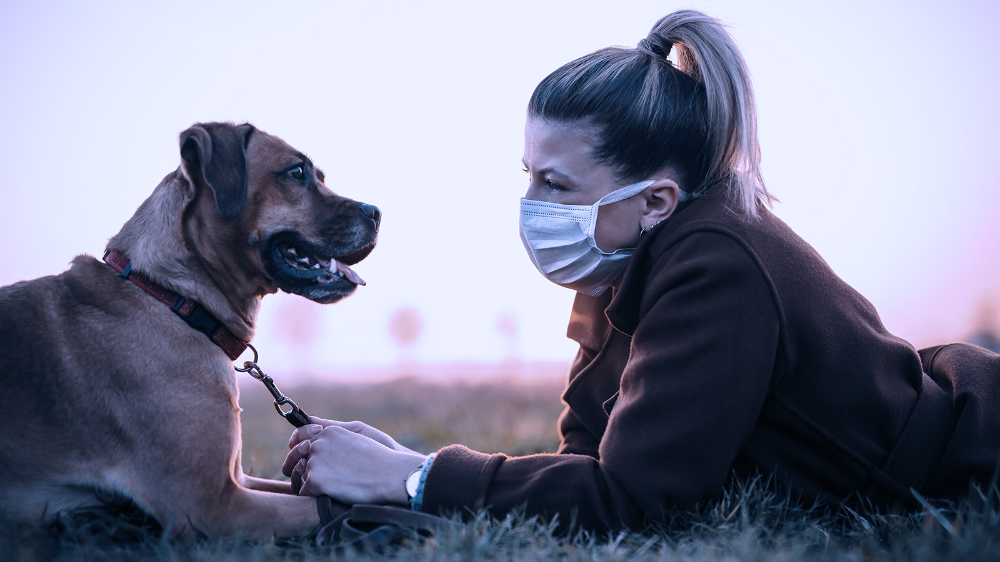

“Adopta una mascota. Las historias llegarán solas.”

Adopta un Amigo
Un punto de encuentro entre un nuevo amigo y tu
El Santuario
Rescatamos, recuperamos y damos un hogar temporal seguro a todos aquellos animales que han sido a abandonados con la esperanza de que encuentren en el futuro proximo un nuevo hogar donde puedan recibir mucho amor.